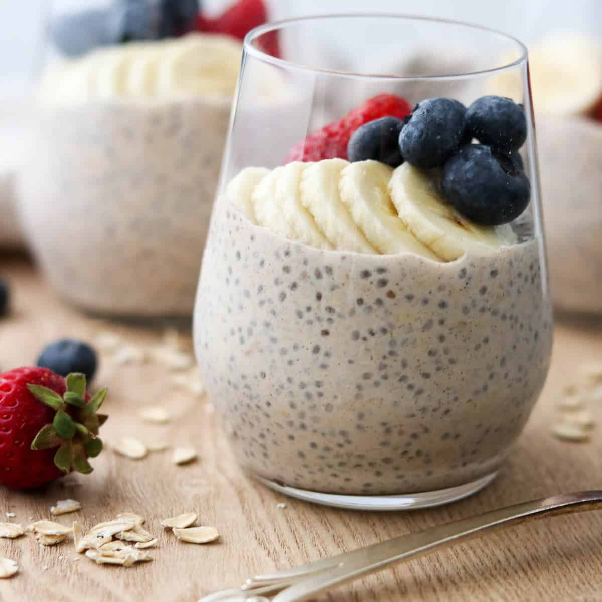

Description:
A pleasantly sweet, rich grab-and-go snack for those who need a way to spice
up their morning oats routine. By allowing the oats proper time to soak
in a cold milk or milk substitute, we end up with a pudding like dish
which serves as a blank canvas for toppings.
Ingredients
- Oats, 0.5 cup
- Soy Milk, 1/2-3/4 cup
- Chia Seeds, 1 tbsp
- Agave Nectar, 1 tbsp
- Blueberries, 1/2 cup
Steps:
- Stir together chia seeds, milk, and oats in a mason jar container
- Cover and store in refridgerator. Soak overnight (~8 hrs)
- Add toppings and sweetener, stir and enjoy!